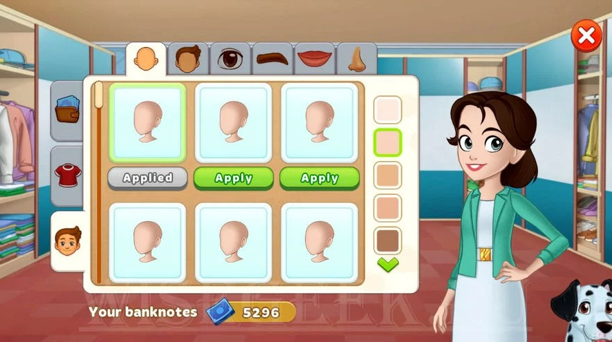
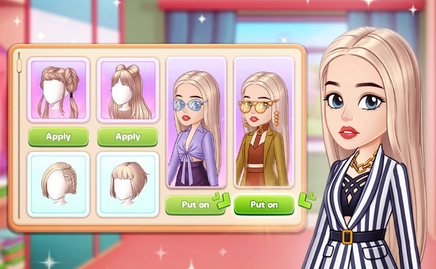
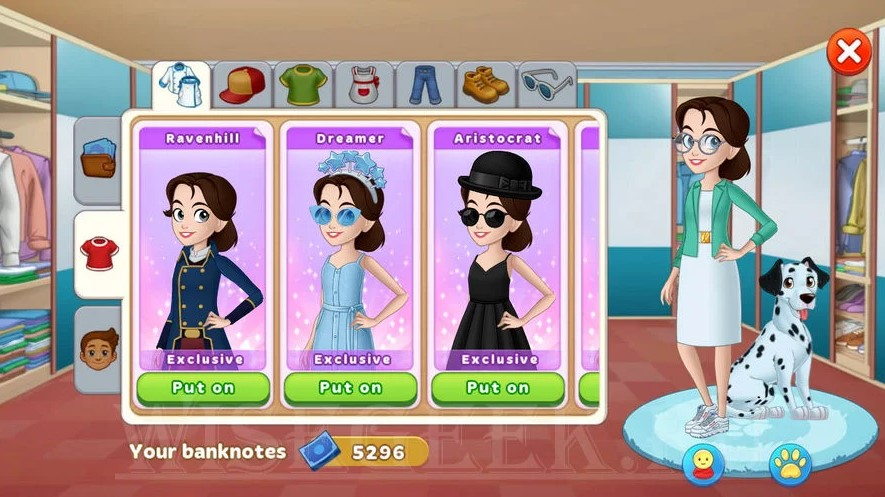

¿Cómo cambio la apariencia de mi personaje?



Para abrir la ventana de personalización del personaje, haz clic en tu avatar. La ventana de personalización del personaje estará disponible a medida que avance en la historia. En la ventana de personalización del personaje, estarán disponibles cambios tanto en la cara como en la ropa del personaje.
Puedes conseguir ropa nueva:
En la tercera pestaña "Nueva colección";
En la oferta especial "Acción deliciosa";
Por completar una asignación de gremio.
En la segunda pestaña "Vestuario" puedes probarte la ropa que tienes.


Síguenos en las redes sociales